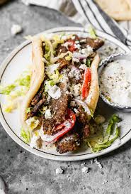

Gyro

Most of us don't have a vertical, rotating spit at home,
but that doesn't mean you shouldn't be able to enjoy delicious gyros whenever you want!
Make juicy, tender, seasoned lamb gyro meat at home with just a bread loaf pan!
This can be served with a side of fries, a salad, or any traditional greek side dish
you may have on hand. I recommend some nice hummus and some stuffed grape leaves.
Ingredients
- 3 pounds ground lamb
- 1/2 cup greek seasoning
- 1 large egg
- 12 pita breads, warmed
- 1 head iceberg lettuce
- 5 roma tomatoes, sliced
- 1 medium red onion
- 1/2 cup tzatziki sauce
Steps
- Preheat oven to 275 degrees F.
- Spray large loaf pan with cooking spray
- Combine lamb, greek Seasoning, and egg in bowl.
- Mix until ingredient are very well combined.
- Firmly press mixture into prepared loaf pan and cover with foil.
- Cook in preheated oven until center reads at least 160 degrees F.
- Remove from oven and let rest until all grease on top is absorbed.
- Remove meat from pan and cut into thin slices
- Load meat into pitas with lettuce, tomatoes, onion, and sauce.
- Serve with sides and enjoy!